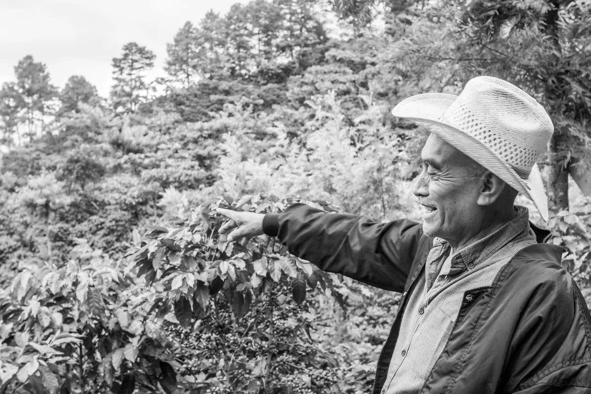

CAFE KONA
Bienvenidos a KŌNĀ, buscamos trabajar directamente con los productores para servir una taza de calidad. Esta temporada nuestro café viene de Chiapas, Oaxaca y Guerrero, de donde tenemos las siguientes variedades:
AMATENANGO DE LA FRONTERA, CHIAPAS
Productor: Nelson Jiménez Proceso: Lavado Alt. 1700mts Variedad: Typica, Caturra. Notas: Nuez, Cacao, Limón.
AMATENANGO DE LA FRONTERA, CHIAPAS
Productor: Luis Ordóñez Finca Las Marías Proceso: Natural Alt. 1700mts Notas: Uva, Tamarindo, Berries Rojo.
MALVARISCO SAN PEDRO EL ALTO, OAXACA
Productor: Margaritas Hernández Alt. 1600-1700 mts Notas: Frambuesa, Vainilla, Chabacano.
MALVARISCO SAN PEDRO EL ALTO, OAXACA
Productor: Rogaciano Proceso: Lavado Alt. 1600-1700 mts Notas: Avellanas, Durazno, Piña, Limón.
ATOYAC DE ALVAREZ, GUERRERO
Productor: Magdaleno García Márquez Finca El Eden Proceso: Natural Alt. 1550 Notas: Caramelo, Piña, Maple.
